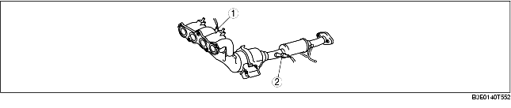
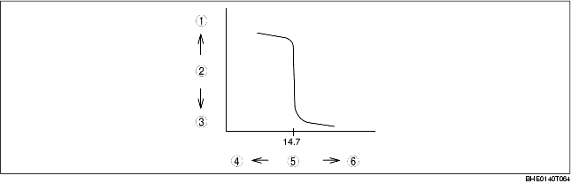

• Installed on the front and back of the WU-TWC.

.
• A heater is built into the sensor to facilitate the activation of the HO2S at engine startup (when the exhaust gas temperature is low).
• A zirconium element is used on the sensor. When there is a difference between the oxygen concentration inside and outside the element, electromotive force is generated by the movement of oxygen ions (inside of the zirconium element: atmosphere, outside: exhaust gas). The electromotive force changes significantly at the boundary of the stoichiometric air/fuel ratio (A/F=14.7). The PCM receives the voltage generated from the HO2S directly, and increases or decreases the fuel injection amount by the fuel injection control so that it is close to the stoichiometric air/fuel ratio.
• When the temperature of the zirconium element is low, electromotive force is not generated. Therefore the HO2S is heated by a built-in heater, facilitating the oxygen sensor activation. Due to this, the sensor is efficiently activated even immediately after cold-engine startup, and a stable sensor output can be obtained.

.